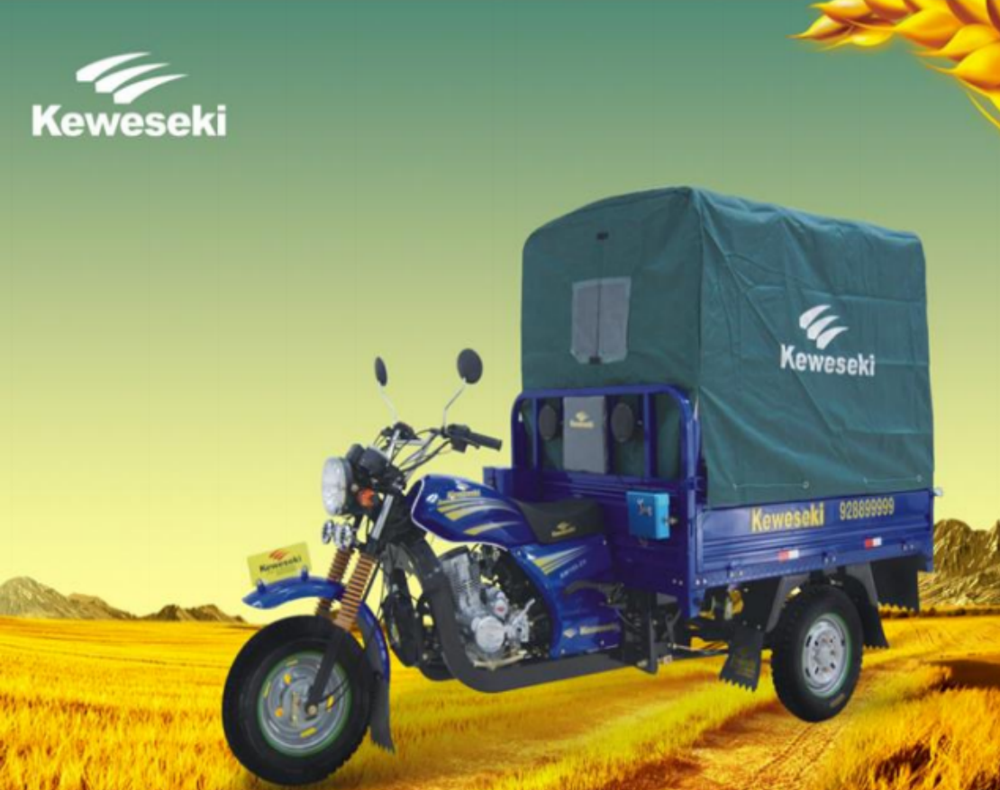
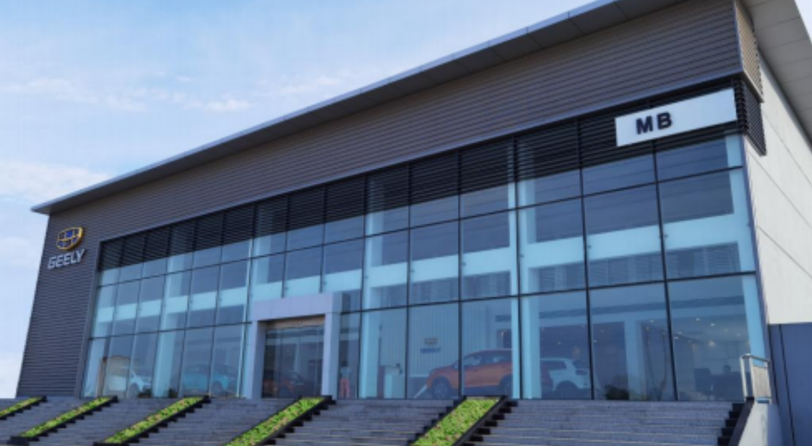
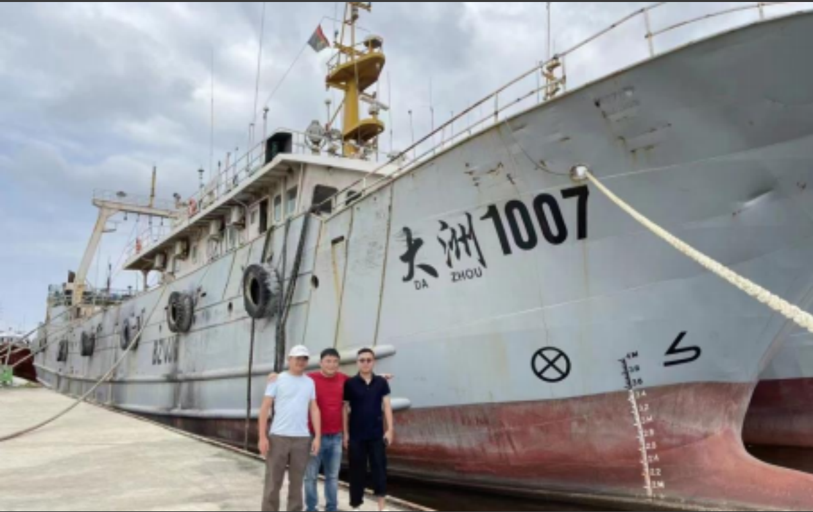

A NIODIOR INDUSTRY fabrica, importa e exporta produtos. Oferece uma gama completa de produtos e dispõe de um sistema de assistência pós-venda abrangente. Entre os produtos similares em Angola, detém a maior quota de mercado e volume de vendas, importando e exportando anualmente mais de 400 unidades (85%) da China.

O Centro de Vendas Standard da Geely (concessionário Geely 4S e centro de serviços pós-venda) está localizado na zona mais próspera e economicamente dinâmica do Boulevard Castro. O primeiro piso conta com um showroom e uma área de experiência de quase 600 metros quadrados, enquanto o segundo piso inclui salas de reuniões independentes, salas de negociação, escritórios de gestores, escritórios administrativos e escritórios da direção geral. Na área exterior, existe um espaço dedicado para test drive e um centro de assistência pós-venda de 2.500 metros quadrados.
A A.E.S COMERCIAL foi um dos cinco únicos fornecedores de produtos agrícolas designados pelo governo angolano em 2015. Guiada pelos princípios da "integridade e do win-win", a empresa está empenhada em fornecer aos agricultores africanos novas tecnologias agrícolas, máquinas e ferramentas, bem como fertilizantes químicos de qualidade, aumentando assim os seus rendimentos e melhorando as suas vidas, ajudando-os a melhorar as suas técnicas de plantação e a aumentar a produtividade.

O 12º Plano Quinquenal para o Desenvolvimento Nacional das Pescas propõe-se coordenar o desenvolvimento da pesca sustentável, controlando rigorosamente a intensidade da pesca e, por outro lado, apoiando e expandindo a pesca em águas distantes.